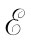
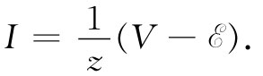

任何一个由一些理想阻抗和发电机所构成的电路，当从任一对端点看时，不论处在什么频率，它都相当于一部发电机 和一个阻抗z的串联。之所以会这样，是因为若在那对端点上加一电压V，当解所有方程以求得电流I时，我们就一定会获得电流与电压之间的一个线性关系。由于所有方程都是线性的，因而对I所得的结果也就应该仅仅是线性地依赖于V。最普遍的这种线性形式可表示为
 （23.1）
一般说来，z和 两者都可能以某种复杂方式依赖于频率ω。然而，如果两端点后面仅有一发电机 （ω）与一阻抗z（ω）相串联时，我们就应获得式（23.1）那样的关系。
也有与此相反的问题：若我们真有具备两个端点的任何电磁器件，并已测量 了I与V的关系以确定 和z作为频率的函数，那么我们能否找到一个与内阻抗z相等效的理想元件的组合呢？答案是，对于任一合理的——也就是说，物理上有意义的——函数z（ω），这种情况可以 用一个含有有限组理想元件的电路来近似 ，并可达到我们希望的高精确度。我们现在暂不考虑这个普遍问题，但只想对几种特殊情况看看从物理的论证方面会期待得到些什么。
若我们考虑的是一个实际的电阻，则知道电流通过它时会产生磁场。所以任何实际电阻也应有一些电感。并且，当有一电势差跨越电阻时，则在电阻两端必然有一些电荷以产生所必需的电场。当电压改变时，这些电荷也将按比例改变，从而该电阻也会有某些电容。我们期待一个实际 电阻也许会有如图23-1所示的等效电路。在一个精心设计的电阻中，这里所谓的“寄生”元件L和C都很小，以致在那些预定用到的频率时，ωL会比R小得多而1/（ωC）则比R大很多，因此就有可能把它们都忽略掉。然而，当频率升高时，它们最终会变得重要起来，因而一个电阻初看就像一个谐振电路。
图23-1 一个实际电阻的等效电路
一个实际电感也并非等于阻抗为iωL的理想电感。一个实际导线线圈将有某些电阻，从而在低频时该线圈实际上就等效于一个电感与某个电阻的串联，如图23-2（a）所示。可是，你或许正在想，电阻和电感共同 存在于一个实际线圈中——电阻完全分散于整条导线中，因而已和电感互相混合了。我们也许更应该采用一个像图23-2（b）那样的电路，它有几个小R和小L互相串联着。但这样一个电路的总阻抗正好是∑R+∑iωL，这就等效于（a）那个较简单的图了。
图23-2 一个实际电感在低频时的等效电路
当对一实际线圈提高频率时，把它当成一个电感与一个电阻的串联就不再是很好的近似，在导线上积累起来以产生电压的电荷将会变得重要起来，就像有一些小电容器横跨于该线圈的各匝之间，如图23-3（a）所示。也许我们试图对该实际线圈用图23-3（b）中的电路来做近似。在低频时，这一电路可由图23-3（c）那个较简单的电路很好地加以模拟（这仍然是我们上面对于一个电阻的高频模型所找到的相同的共振电路）。然而，对于较高频率，则图23-3（b）的那个较复杂的电路将更好。事实上，你想要对一个真实的物理的电感的实际阻抗表达得越准确，在它的人为模型中你就得用越多的理想元件。
图23-3 一个实际电感在高频上的等效电路
让我们稍微密切地注视在一个实际线圈中所发生的情况。一个电感的阻抗表现为ωL，因而在低频时它变为零——出现一个“短路”：我们见到的只是导线的电阻。当频率增高时，ωL很快变得比R大得多，而该线圈看起来很像一个理想电感。然而，当频率增得更高时，电容变得重要起来，它的阻抗与1/（ωC）成正比，当ω小时数值很大。因此对于足够低的频率，电容是一个“断路”，而当它与别的东西并联时，不会抽取任何电流。但在高频时，电流更愿意流入各匝间的电容，而不是流经电感。所以在线圈里的电流从一匝跳跃至另一匝，而不必发愁要去转那些不得不在那里抵抗着电动势的圈子了。因此，尽管我们也许已经预定 电流会环绕回路通过，但它却将选取较方便的路径——阻抗最小的路径。
要是这一课题曾经为大众所感兴趣，则这一效应可能已经被赋予“高频障壁”或其他类似名称了。同类事情在所有学科中都会出现。在气体动力学中，若你试图让原来是为低速设计的东西去跑得比声速还快，那就不行。这并不意味着确实存在一巨大的“障壁”，而只是指该东西必须重新加以设计罢了。因此，这一原来我们作为一“电感”而设计出来的线圈在十分高的频率上将不再作为一个良好的电感，而是作为某一种其他东西。对于高频，我们得寻找一个新的设计。